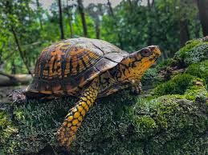

| Las Tortugas Terrestres
Las tortugas terrestres son reptiles que pueden ser excelentes mascotas domésticas, si lo que se pretende es disfrutar de animales poco exigentes, pacíficos y tranquilos. Las tortugas terrestres son básicamente herbívoras, se alimentan de verduras y frutas, y ocasionalmente, de larvas. Aún así en algunas especies su alimentación es omnívora.
Especies :
- Tortuga Mediterránea
- Tortuga Rusa
- Tortuga Estrellada
- Tortuga Sulcata
- Tortuga de Caja

Ficha:
- Mascota:Reptil
- Familia:Testudinae
- Grupo:Quelonia
- Tamaño:Según la especie
Para mas información de especies en México vea el siguiente video:
Derechos de autor: a quien correspondan
Presione la tortuga para volver
|